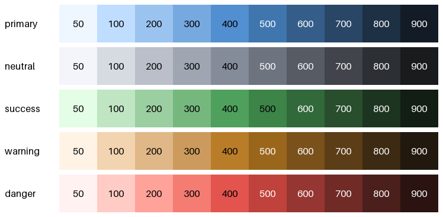
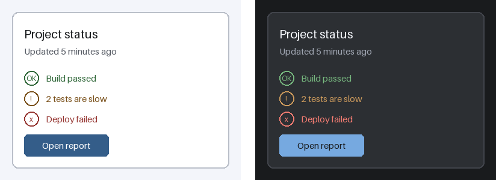
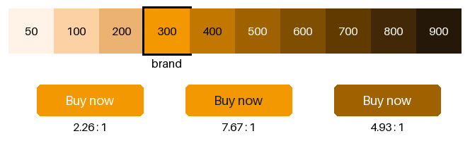

実践: UI の配色設計
本章では、これまでの章の内容を組み合わせて、アプリケーションの画面（UI）の配色を設計する。画面の数や部品の数が多い UI では、色を 1 つずつ選ぶのではなく、色を決める仕組みを先に作ることが重要である。
本章のコードは ui_colors.py にある。カラースケールを作る関数は、パレットの作り方の palette.py のものを使う。
配色を仕組みにする
UI の配色は、次の 3 つの層に分けて設計するとよい。
層 |
内容 |
例 |
|---|---|---|
カラースケール |
使ってよい色の一覧。色相ごとに、明るさの異なる色を段階的に並べる。 |
primary の 50 から 900 まで |
トークン |
色の役割の名前と、その役割に割り当てるカラースケールの色。 |
text に neutral の 900 を割り当てる |
部品 |
ボタンや入力欄などの部品は、トークンだけを使って色を指定する。 |
ボタンの背景色に primary を使う |
部品がカラーコードを直接使わず、トークンを通して色を参照するようにしておくと、次の利点がある。
同じ役割の色が画面ごとにばらばらになることを防げる。
トークンに割り当てる色を替えるだけで、全ての画面の配色を変えられる。ダークテーマへの対応も、トークンの割り当てを 2 通り用意するだけで済む。
トークンの組み合わせ（text と background など）ごとに、コントラスト比を機械的に確かめられる。
カラースケールを用意する
パレットの作り方のカラースケールの作成の節で紹介した方法を使い、役割ごとに 10 段階のカラースケールを作る。段階には、明るい方から 50、100、200 から 900 までの名前を付ける。この名前の付け方は、多くの UI のフレームワークで使われている。
STEP_NAMES = ["50", "100", "200", "300", "400",
"500", "600", "700", "800", "900"]
Theme = dict[str, FloatArray]
def make_scale(base_code: str) -> dict[str, FloatArray]:
"""基準の色から 10 段階のカラースケールを作り、段階の名前と対応させる。"""
colors = oklch_scale(hex_to_rgb(base_code), len(STEP_NAMES),
lightest=0.97, darkest=0.22)
return dict(zip(STEP_NAMES, colors))
# 役割ごとのカラースケール。
PRIMARY = make_scale("#2f6fb0")
NEUTRAL = make_scale("#6b7280")
SUCCESS = make_scale("#2e8540")
WARNING = make_scale("#b7791f")
DANGER = make_scale("#c53030")
図 22 は、5 つの役割のカラースケールである。各段階の名前の文字は、白と黒のうちコントラスト比が高い方の色で描いている。

図 22 役割ごとのカラースケール
どのカラースケールも、同じ段階の色は OKLCH の明度 \(L\) が等しい。そのため、段階の名前から明るさの見当が付き、色相が違っても同じ段階の色は背景として同じように扱える。たとえば、図 22 では、ほとんどのカラースケールで 400 以下の段階には黒い文字が、500 以上の段階には白い文字が選ばれている。
ただし、success の 500 には黒い文字が選ばれている。コントラスト比の計算に使う相対輝度は、緑の成分の重みが大きい（アクセシビリティを参照）。そのため、明度 \(L\) が同じでも、緑の色は相対輝度が高くなりやすい。段階の名前は目安として使い、実際のコントラスト比は後で述べる方法で確かめる。
neutral は、彩度の低い灰色のカラースケールである。背景、枠線、文字など、UI の大部分の面積はこの色で塗る。完全な無彩色ではなく、primary に近い色相をわずかに含ませると、画面全体に統一感が出る。
トークンに色を割り当てる
次に、色の役割（トークン）を決め、カラースケールの色を割り当てる。明るいテーマ（ライトテーマ）と暗いテーマ（ダークテーマ）の 2 通りの割り当てを用意する。
トークン |
役割 |
ライト |
ダーク |
|---|---|---|---|
background |
画面全体の背景 |
neutral 50 |
neutral 900 |
surface |
カードなど、背景の上に置く面 |
白 |
neutral 800 |
border |
枠線、区切り線 |
neutral 200 |
neutral 700 |
text |
本文の文字 |
neutral 900 |
neutral 50 |
text-muted |
補足の説明など、目立たせない文字 |
neutral 600 |
neutral 300 |
primary |
主要なボタン、リンク |
primary 600 |
primary 300 |
on-primary |
primary の上に載せる文字 |
白 |
neutral 900 |
success |
成功、完了の状態 |
success 600 |
success 300 |
warning |
注意が必要な状態 |
warning 600 |
warning 300 |
danger |
エラー、危険な操作 |
danger 600 |
danger 300 |
ライトテーマとダークテーマでは、明るさの順序を逆にしている。たとえば、ライトテーマで 600 の段階を使う役割には、ダークテーマでは 300 の段階を使う。
LIGHT_THEME: Theme = {
"background": NEUTRAL["50"],
"surface": np.ones(3),
"border": NEUTRAL["200"],
"text": NEUTRAL["900"],
"text-muted": NEUTRAL["600"],
"primary": PRIMARY["600"],
"on-primary": np.ones(3),
"success": SUCCESS["600"],
"warning": WARNING["600"],
"danger": DANGER["600"],
}
DARK_THEME: Theme = {
"background": NEUTRAL["900"],
"surface": NEUTRAL["800"],
"border": NEUTRAL["700"],
"text": NEUTRAL["50"],
"text-muted": NEUTRAL["300"],
"primary": PRIMARY["300"],
"on-primary": NEUTRAL["900"],
"success": SUCCESS["300"],
"warning": WARNING["300"],
"danger": DANGER["300"],
}
図 23 は、トークンの色だけを使って描いた画面の見本である。左がライトテーマ、右がダークテーマである。状態を表す行には、色に加えて記号も付けている（アクセシビリティを参照）。

図 23 ライトテーマ（左）とダークテーマ（右）の画面の見本
ダークテーマの注意点
ダークテーマは、ライトテーマの色を単純に反転しただけではうまくいかない。次の点に注意する。
背景に純粋な黒を使わない。真っ黒な背景に白い文字を置くと、明るさの差が大きすぎて、文字の周りがにじんで見えることがある。本章の例では、明度 \(L\) が約 0.22 の neutral 900 を背景にしている。
面の重なりを明るさで表す。ライトテーマでは影で面の重なりを表せるが、暗い背景では影が見えにくい。手前にある面ほど明るい色にする。本章の例では、背景（neutral 900）よりカード（neutral 800）を明るくしている。
明るい段階の色を使う。ライトテーマで使う濃い色は、暗い背景の上では沈んで読めなくなる。一方、原色のような鮮やかな色は、暗い背景の上ではぎらついて見える。本章の例では、ボタンや状態の色に、明るい 300 の段階を使っている。
同時対比を考慮する。色の基礎で見たとおり、同じ色でも背景が暗いと明るく見える。ライトテーマの色をそのまま使わず、実際の背景の上で見え方を確かめる。
コントラスト比を確かめる
トークンを使うと、確かめるべき色の組み合わせを列挙できる。ui_colors.py では、前景と背景のトークンの組と、必要なコントラスト比を一覧にしている。文字には 4.5 以上を、ボタンの背景のような UI の部品には 3 以上を求めている（アクセシビリティの「WCAG の基準」の節を参照）。
CHECKS = [
("text", "background", 4.5),
("text", "surface", 4.5),
("text-muted", "surface", 4.5),
("on-primary", "primary", 4.5),
("primary", "surface", 3.0),
("success", "surface", 4.5),
("warning", "surface", 4.5),
("danger", "surface", 4.5),
]
ui_colors.py を実行すると、次の結果が表示される。全ての組み合わせが基準を満たしている。
前景 |
背景 |
基準 |
ライト |
ダーク |
|---|---|---|---|---|
text |
background |
4.5 |
15.87 |
15.87 |
text |
surface |
4.5 |
17.31 |
12.36 |
text-muted |
surface |
4.5 |
6.83 |
5.43 |
on-primary |
primary |
4.5 |
6.81 |
7.01 |
primary |
surface |
3.0 |
6.81 |
5.46 |
success |
surface |
4.5 |
6.54 |
5.67 |
warning |
surface |
4.5 |
6.95 |
5.34 |
danger |
surface |
4.5 |
7.29 |
5.10 |
このような確認を、配色を変更するたびに自動で実行するようにしておくと、読みにくい色の組み合わせが紛れ込むことを防げる。
ブランドカラーをスケールに組み込む
企業や製品には、ロゴなどに使う決まった色（ブランドカラー）があることが多い。ブランドカラーは UI のメインカラーの候補になるが、そのままでは UI の部品に使いにくいことがある。
ここでは、明るい橙 #f39800 をブランドカラーの例とする。この色の明度 \(L\) は約 0.755 であり、白い文字とのコントラスト比は 2.26 しかない（アクセシビリティの例と同じ色である）。そのため、この色のボタンに白い文字を載せると、文字の基準の 4.5 を満たさない。
まず、ブランドカラーからカラースケールを作り、明度が最も近い段をブランドカラーそのもので置き換える（パレットの作り方のカラースケールの作成を参照）。
def brand_scale(brand_code: str) -> tuple[dict[str, FloatArray], str]:
"""ブランドカラーからカラースケールを作り、明度が最も近い段を置き換える。
戻り値は (カラースケール, ブランドカラーそのものを置いた段の名前)。
"""
brand = hex_to_rgb(brand_code)
scale = make_scale(brand_code)
brand_lightness = float(oklab_lightness(brand))
nearest = min(STEP_NAMES, key=lambda step: abs(
float(oklab_lightness(scale[step])) - brand_lightness))
scale[nearest] = brand
return scale, nearest
ui_colors.py を実行すると、ブランドカラーは 300 の段に置かれ、次の結果が表示される。
段 |
色 |
明度 \(L\) |
白の文字 |
neutral 900 の文字 |
|---|---|---|---|---|
200 |
|
0.803 |
1.88 |
9.21 |
300（ブランドカラー） |
|
0.755 |
2.26 |
7.67 |
400 |
|
0.637 |
3.52 |
4.92 |
500 |
|
0.553 |
4.93 |
3.51 |
600 |
|
0.470 |
7.00 |
2.47 |
置き換えた 300 の段は、本来の明度（0.72）より少し明るい。そのため、この段だけは段階の間隔がそろわないが、ブランドカラーを正確に使えることを優先している。
図 24 は、このカラースケールと、ボタンの 3 つの例である。ボタンの下の数値は、文字と背景のコントラスト比である。

図 24 ブランドカラーを組み込んだカラースケールと、ボタンの例。左から、ブランドカラーに白の文字、ブランドカラーに neutral 900 の文字、500 の段に白の文字。
この結果から、明るいブランドカラーの扱い方として、次の 2 つが考えられる。
ブランドカラーの背景に暗い文字を載せる。 neutral 900 の文字なら、コントラスト比は 7.67 になる。ブランドカラーをそのまま目立たせたい場合に向いている。
白い文字を載せる部品には、暗い段を使う。 500 の段なら、白い文字とのコントラスト比は 4.93 になる。ブランドカラーそのものは、ロゴや、文字を載せない装飾に使う。
どちらを選ぶ場合も、ブランドカラーの色相は保たれているので、画面全体の印象は変わらない。ブランドカラーを印刷物でも使う場合の注意点は、印刷物の配色の「媒体ごとの色の指定」の節で扱う。
まとめ
UI の配色は、カラースケール、トークン、部品の 3 つの層に分けて設計する。部品はトークンだけを通して色を参照する。
同じ段階の色の明度をそろえたカラースケールを用意すると、段階の名前から明るさの見当が付く。
ダークテーマでは、明るさの順序を逆にしたトークンの割り当てを用意し、背景の黒さ、面の重なり、色の彩度に注意する。
トークンの組み合わせごとのコントラスト比を、プログラムで確かめる。
明るいブランドカラーは、そのままでは白い文字とのコントラスト比が足りないことがある。暗い文字を載せるか、白い文字を載せる部品には暗い段を使う。